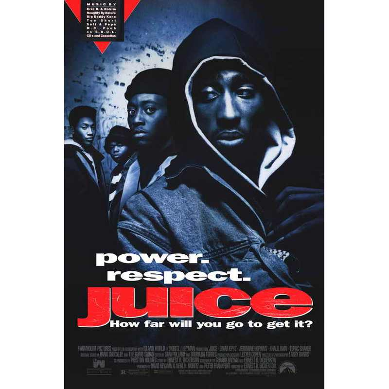

HOME
Juice is a 1992 crime drama following four friends in Harlem as they navigate pressure, power, and betrayal. The story centers on the character Bishop, played by Tupac Shakur, and explores how far someone will go to get "the juice."
Company Credits: Island World, New Line Cinema
Release Date: January 17, 1992
Genres: Crime, Drama, Thriller
Rating: R
Running Time: 1h 35m